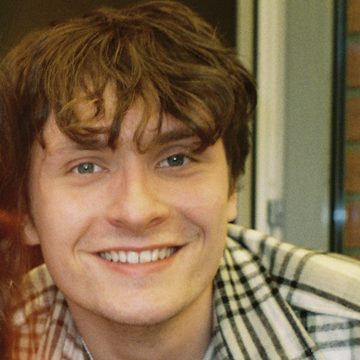

Hi, I’m Nando: a filmmaker and a creative, specialising in cinematography, editing and journalism. Since graduating from the Willem de Kooning Academie in 2022 I make work that blends authentic storytelling with a hint of social satire: documentaries, portraits and promo films.
I’m inspired by ambitious people and love exploring their stories and emotions. My goal is to uncover the beauty, humour and complexity of the human experience. Right now I’m a Creative, Video Editor & Media Manager at We Gaan ’T Zien Media in Hilversum, working on De Jeugdzorg Files, De Nieuwkomers and Tarwekamp.
Creative · Video Editor · Media Manager. De Jeugdzorg Files, De Nieuwkomers, Tarwekamp.
The Real Housewives of Amsterdam S4 (VM), House of Villains S1 (VM), Oh Oh Den Haag (VM), De Influencer Goeroe: Bentinho Massaro, HBO (assistant editor), Opgelicht in de Liefde (VFX), The Wedding Planners S1 (EM). Clients: NBC, HBO, Videoland, RTL 4, SBS6, Amazon Prime, NPO.
Avid & social video editor for URK!, Grote Gezinnen Emigreren and De Grannies van Amsterdam. Clients: NPO, SBS6, Omroep MAX.
Freelance camera journalist & video editor.
Senior video editor & videographer. Clients: ING, HEMA, HCS, Radboud Universiteit.
Director driven, videographer, video editor. Clients: Daan Roosegaarde, AkzoNobel, Starbucks, Booking.com, Songfestival & TikTok.
Camera & light assistant. Client: Delikt.
Video editor, assistant art director. Clients: Patagonia, Superstrata & Igor Beuker.
Creative video editor intern: promos for ID and Discovery A-items like Gold Rush and River Monsters.
Grip intern. Clients: Netflix, Becel, Bunq & ING.
Self-employed as Nando de Groot.
Bachelor of Arts, Audiovisual Design (graduated)
Re-imagining tomorrow through arts and sciences, RASL Honours
Exchange project: pitching, storytelling and copywriting
Level 4, Audiovisual Production (graduated)